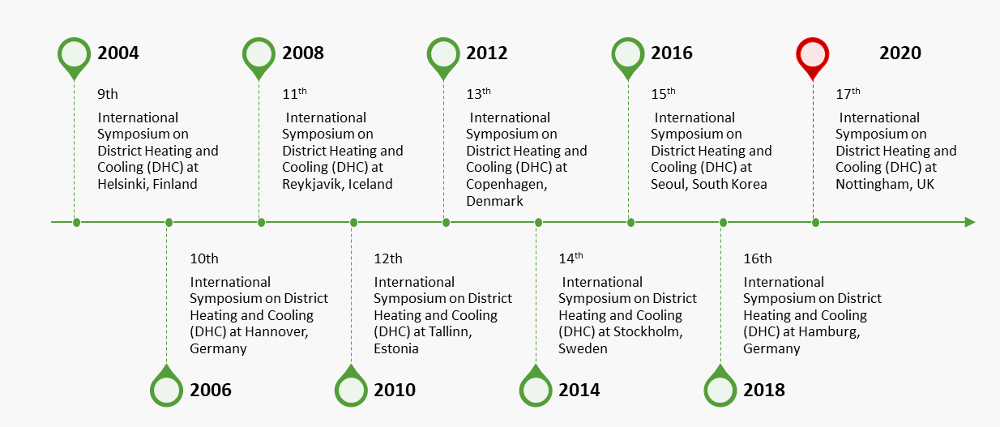
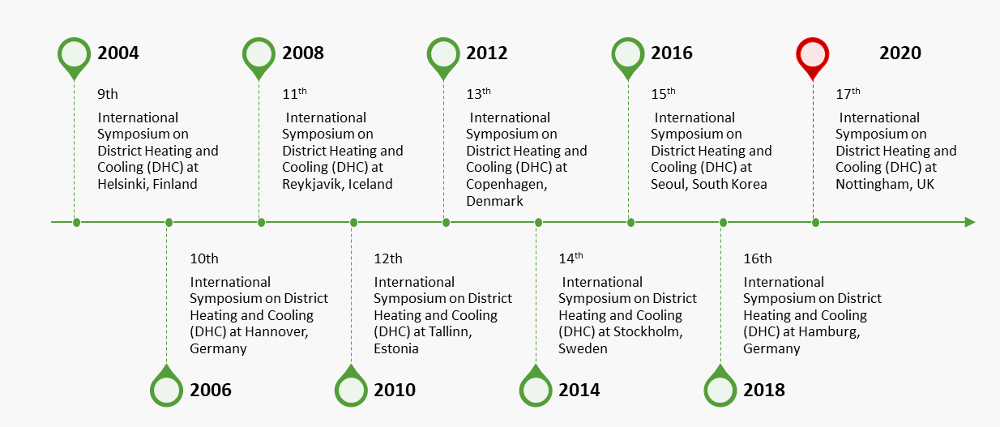

17th International Symposium on District Heating and Cooling (DHC) Nottingham, UK
For more than three decades, the International Symposium on District Heating and Cooling (DHC) has been one of the major international event with the aim of communicating industrial and academic research in the field of District Heating and Cooling. This biennial symposium has provided an excellent platform to researchers from the academia and practitioners from the industry to interact as well as present their ideas.
Historically, this symposium was first initiated by the support of Nordic District Heating Research and launched in 1987 at Lund University, Sweden. Later in 2007, the symposium became an integral part of Nordic/Baltic PhD project by the partial support of Nordic Energy Research and District Heating and Cooling industry. Subsequently, from 2016 onwards the IEA District Heating and Cooling programme (IEA DHC) supports the symposium with the aim to continue the on-going innovation and research as we step into the future. The first symposium was entirely based on the district heating technology, which later became district heating and cooling in 1999.
At present, the International Energy Agency District Heating and Cooling programme (IEA DHC) owns this symposium. It is the only non-profit research programme with global outreach for this technology.
 

The 17th International Symposium on District Heating and Cooling will be one of the significant meeting for testing research findings and learning about District Heating and Cooling organised for the first time in Nottingham, the city with the biggest district heating network in UK. The Nottingham district energy network is comprised of approximate 68 km of insulated pipework carrying pressurised hot water around Nottingham City Centre and St. Ann’s, a residential suburb to the north of the city. This has been used to satisfy the space heating and hot water requirements of circa 4,900 dwellings that represent a domestic market share of 42 per cent among the around 11,500 occupied dwellings in the area. The heat energy mainly comes from the annual incineration of around 170,000 tonnes of municipal waste at Nottingham Eastcroft incinerator. Nottingham’s extensive district heating network derives from the tradition of using incinerators to provide heat supply. The first incinerator or “Destructor” was built in Nottingham in 1874 by Manlove, Alliott & Co. Ltd. to the design of Albert Fryer.
The 17th symposium will provide an excellent platform to learn about the latest research and bring together academic and industrial researchers from different countries to keep in touch with the latest research and development trends in the field of district heating and cooling. This event will focus on innovative research and development ideas to ensure successful future resilient district heating and cooling technology especially considering future economic development, environmental awareness, worldwide engagement and energy security aspects.